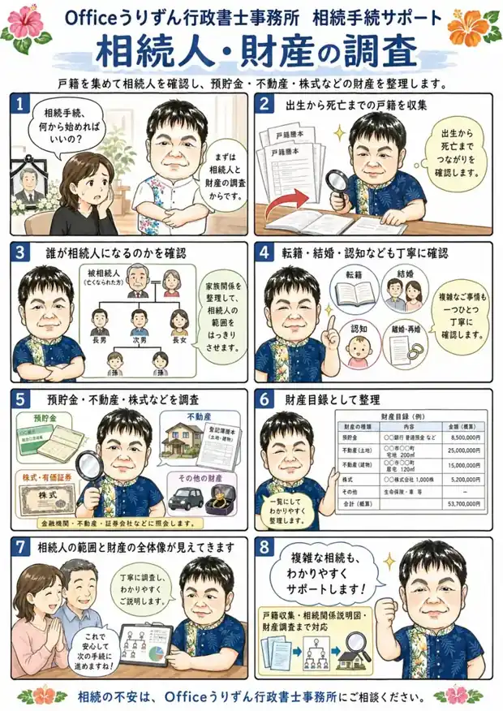

死亡直後の手続き・名義変更
銀行から相続書類の不足を指摘されたら｜差戻し時の確認ポイント
相続の手続きで、金融機関から書類が足りないと言われたときに確かめたい点を整理します。何が足りないのかの確認の仕方、戸籍のつながりと印鑑証明書の区分、法定相続情報一覧図の写しの使い方を、行政書士が説明します。
川崎・横浜の相続手続き相談室
ご家族が亡くなったあとの手続きも、
ご自身の将来への備えも。
行政書士・社会保険労務士にご相談ください。
初回60分無料 ／ 土日祝は要予約
相続が初めての方も、将来が心配な方も。
次のようなご相談をお受けしています。

相続手続きと年金を、一つの窓口で。ご自身の備えについても、必要なサポートを一緒に整理します。
相続登記は司法書士、相続税の申告は税理士、紛争対応は弁護士と連携します。
ご事情を伺い、必要なお手続きを一緒に整理します。


代表の前西原清城は、行政書士と社会保険労務士の資格を持っています。相続の書類や預貯金の手続きだけでなく、ご遺族の年金についてもご相談いただけます。
事務所は川崎区中島にあります。ご家族のこと、ご自身のこれからのこと。何を頼めるか分からない段階でも、お問い合わせください。
代表・メンバー紹介を見る ↗何を頼めるのか、費用はどのくらいか。
お話を伺いながら、ご案内します。
その場で契約を決める必要はありません。
初回60分相談無料
ご契約の前に書面でお見積り
土日祝もご予約で対応
フォームからのご相談
無料相談のお問い合わせ ↗24時間受付・翌営業日までに返信お問い合わせ → 初回相談 → お見積り → ご納得いただいてからご契約
お悩みを整理するヒントを、テーマ別にお届けします。
相続の手続きで、金融機関から書類が足りないと言われたときに確かめたい点を整理します。何が足りないのかの確認の仕方、戸籍のつながりと印鑑証明書の区分、法定相続情報一覧図の写しの使い方を、行政書士が説明します。

相続手続きが長引くときは、どこかの工程で止まっています。期限がある手続きの一覧と、戸籍・書類・金融機関・相続人の足並みという止まりやすい4つの工程、先に整理しておくことを行政書士が整理します。

相続人の誰も反対していないのに手続きが進まないのは、全員分の書類をそろえる作業で止まりやすいからです。連絡の窓口役の決め方、書類の回し方、戸籍の束の減らし方を、行政書士が整理します。

賃貸住宅で亡くなった方の部屋に残された荷物は、相続人に引き継がれます。国土交通省と法務省が示した残置物のモデル契約条項の仕組みと、残したいものを書いておく指定残置物リストの作り方を、行政書士が整理します。
相続のことも、ご自身の備えのことも。
まずは初回60分の無料相談をご利用ください。